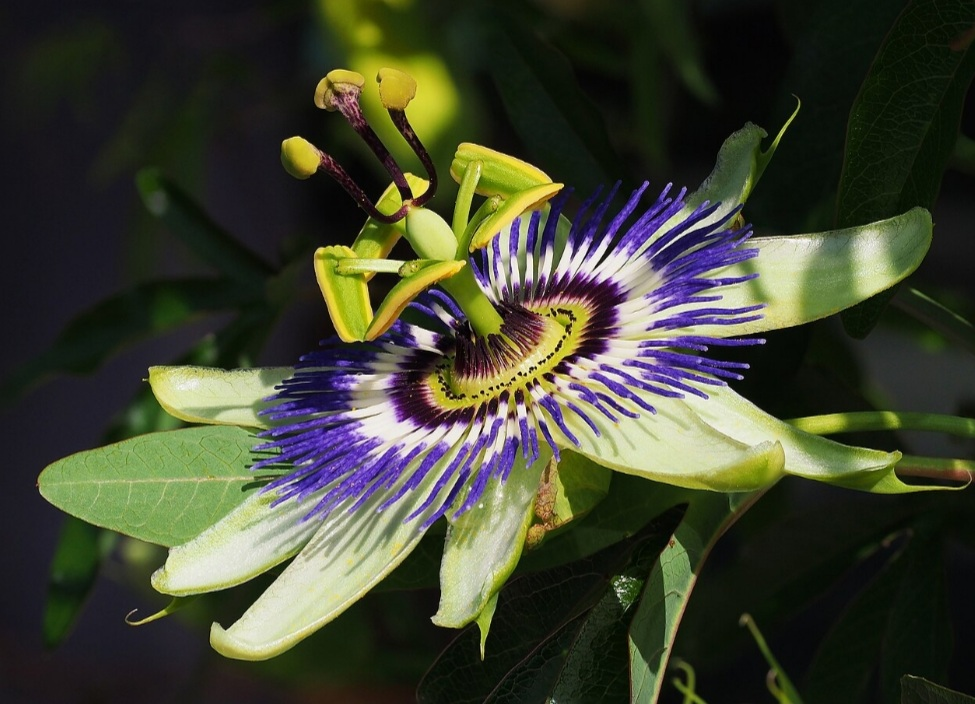

01 // The Words
Quote of
Quote of
the Month
"A glitch is not a failure of the system; it is the system's attempt at a new vocabulary."
Photography of the Month


03 // Perspective
A Visual for Thought

?